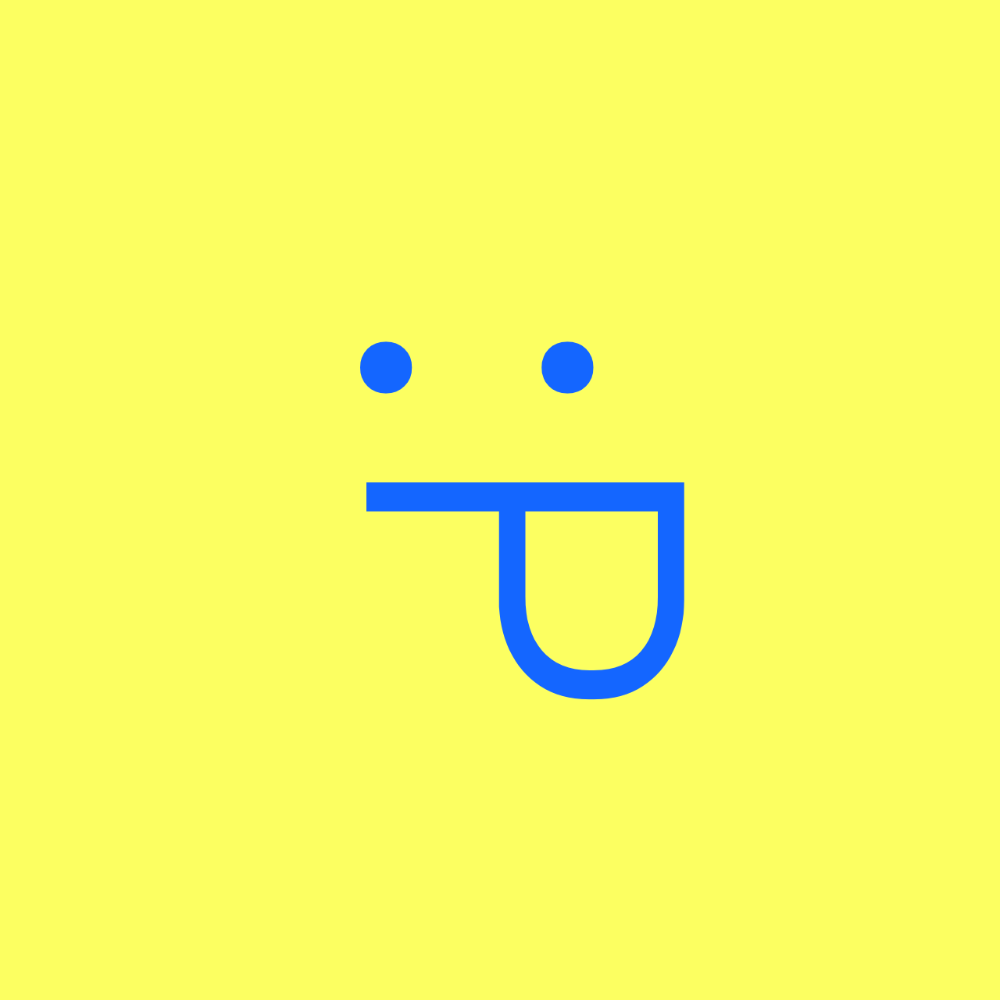

O mundo está cheio de informação, mas nem sempre ela chega no momento certo, do jeito certo. O Path nasceu para mudar isso, criando pontes simples, inteligentes e elegantes entre o espaço físico e o mundo digital.
Path é uma plataforma de rotas digitais. Uma iniciativa criativa que organiza, conecta e entrega experiências online de forma direta e personalizada, através de dois produtos principais: Routes e Folders.
Path: Routes que conectam o físico ao digital
Uma Route é um atalho inteligente entre o mundo impresso e a web. Um QR Code gerado e vinculado a um destino digital específico, pronto para existir em qualquer superfície física. Sem links longos, sem complicação. Só o caminho certo, no lugar certo.
Path: Folders
Um Folder é um espaço digital que reúne links, perfis e referências em um único endereço limpo e acessível. Ideal para apresentações, reuniões e perfis públicos, substituindo a fragmentação de múltiplos links espalhados.
Porque a conexão entre o mundo físico e o digital ainda é confusa e fragmentada. Path é uma iniciativa que acredita que essa ponte pode ser simples, bonita e poderosa.
Path, Your-Web-Way.